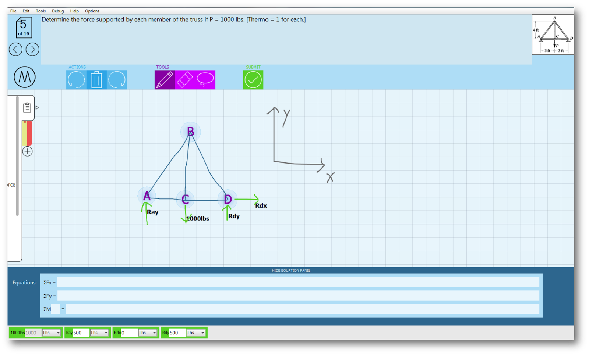
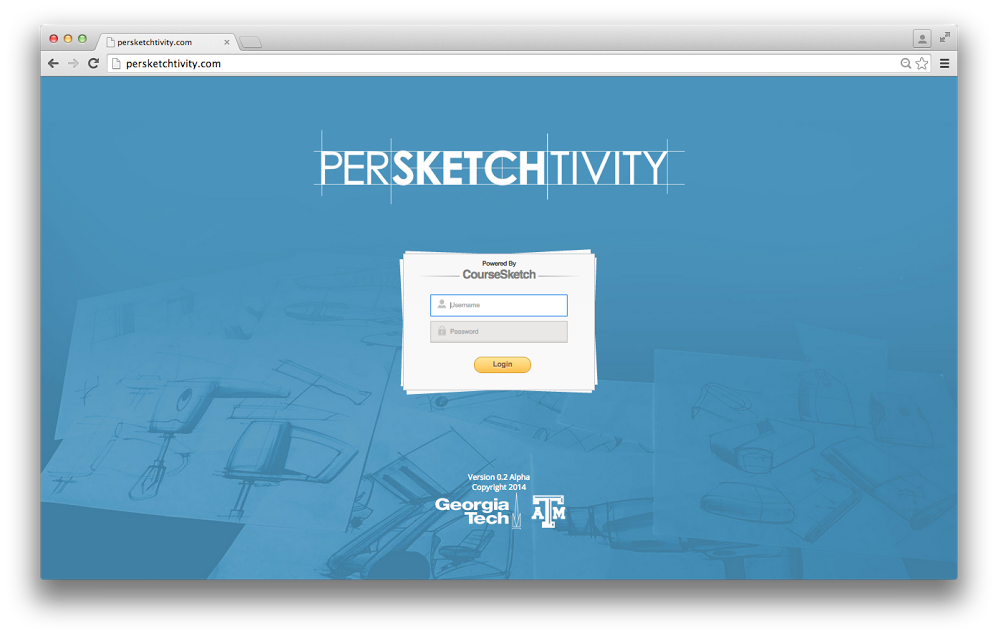

Howdy! We are the
Sketch Recognition Lab
at Texas A&M University
Our mission at the Sketch Recognition Lab:
Develop activity recognition algorithms that can:
Develop wearable technology and sensors that:
- Director, Sketch Recognition Lab
- Associate Professor,
- Computer Science & Engineering, TAMU
- 326-327 Teague, 414C and 229 HRBB
- Mailstop 3112, College Station, TX 77840
- hammond @ tamu.edu, 979 353 0899
Dr. Tracy Anne Hammond

Education:
SRL Members, Alumni, and Collaborators
Projects

Mechanix
Mechanix is a sketch based interfacced for statics classes!
Mechanix is a sketch based interfacced for statics classes!

Kidgab
Haptimoto
Maestoso
Coursesketch
Kidgab